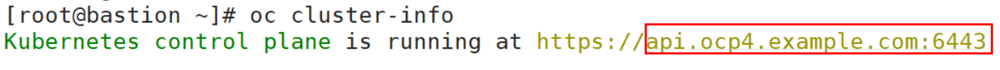

Before backing up and restoring Kubernetes CSI, register the Kubernetes cluster with the OceanProtect. One set of OceanProtect supports a maximum of eight Kubernetes clusters.
Procedure
- Choose Protection > Containers > Kubernetes CSI.
- Click the Cluster tab, and then click Register.

For 1.6.0 and later versions, you can select the following cluster types: general Kubernetes cluster, CCE cluster, and OpenShift cluster.
- Register a cluster through token authentication or kubeconfig authentication.Table 1 or Table 2 describes the Kubernetes cluster registration information.
Table 1 Token authentication and registration information of the Kubernetes cluster Parameter
Description
Name
User-defined cluster name.
IP Address and Port
Service IP address and port number of the Kubernetes service. To query the address and port number, perform the following steps:
- For CCE , FusionCompute, and native Kubernetes:
- Use PuTTY to log in to any node where the kubectl command can be executed in the Kubernetes cluster.
- Run the following command to query the IP address and port number:
kubectl cluster-info
The following command output is displayed, where the IP address and port number are displayed in the line that contains https://.
- For OpenShift:
- Use PuTTY to log in to any node where the oc command can be executed in the Kubernetes cluster.
- Run the following command to query the port number:
oc cluster-info
The following command output is displayed, where api.ocp4.example.com is the domain name, and 6443 is the port number.

- Run the following command to query the IP address:
ping api.ocp4.example.com
Token Information
Service access token of Kubernetes. The OceanProtect must at least have the token with the minimum permissions to ensure that backup and restoration jobs are normal. For details about how to generate a token with the minimum permissions, see Step 2: (Optional) Generating a Token with the Minimum Permissions.
NOTE:- For FusionCompute, you can also obtain the value of the token field from the kubeconfig configuration file. This method is more convenient, but the obtained token has all permissions.
- For OpenShift, obtain the token of the administrator permission by following the instructions provided in Obtaining the Token Information.
Backup Image Name and Tag
Image name and tag of the pod that performs PVC backup. Before the backup, upload the image file of the backup software to the image repository of the Kubernetes cluster. For details about how to upload the image file, see Uploading the Kubernetes Installation Package to the Image Repository, Uploading and Updating the Kubernetes Image Package and Uploading the Kubernetes Installation Package to the Kubernetes Cluster.
After uploading an image file, you can obtain the image name and tag value in the following ways:
- If FusionCompute is used as the management platform, choose Container Images > Local Repositories > library on the Container Management page, and click the name of the uploaded image file. On the displayed Image Version tab page, in the row of the target image version, click Copy Pull Command on the right. In the copied command, the information similar to the following (the x86 image file is used as an example) refers to the backup image name and tag value:
192.168.1.1:7443/library/k8s_backup_image_x86:latest
- If CCE is used as the management platform, log in to the CCE console and choose Cloud Container Engine > SoftWare Repository for Container > Images. Click the name of the uploaded image file and view the image name and tag value in the Image Pull Command column of the corresponding image version.
- If OpenShift is used as the management platform, you can obtain the image name and tag by referring to Uploading the Kubernetes Installation Package and Obtaining the Image Name and Tag Information.
- If native Kubernetes is used as the management platform, run the following command to query the backup image name and tag:
crictl image
For example, the obtained backup image name and tag are as follows:
docker.io/library/k8s_backup_image_x86
latest
Input example:
Image name:Tag value
Backup Jobs on a Single Node
Maximum number of concurrent backup jobs supported by a single node. The default value is 4, and the maximum value is 8. Set a proper number of backup jobs based on the remaining space of the Kubernetes CSI.
Task Timeout Duration
Default maximum execution duration of a backup or restoration job. If the backup or restoration job execution time exceeds the configured job timeout interval, the job will fail to be executed.
Certificate verification
This function is enabled by default. During token authentication, you need to enter the certificate value. When a Kubernetes cluster is registered, its certificate is verified to ensure the security of interaction between the OceanProtect and external devices. After this function is disabled, security risks may exist in the communication between the system and Kubernetes. Exercise caution when performing this operation.
NOTE:- If the management platform is DCS-FusionCompute, the certificate value is the parameter value of certificate-authority-data of the registered Kubernetes cluster configuration file.
- For details about how to obtain the certificate value when the management platform is CCE, see Obtaining the Certificate Value During Token Authentication (for CCE).
- If OpenShift is used as the management platform, run the following command on the background page of the Kubernetes cluster. The value of certificate-authority-data in the command output is the certificate value.
oc config view --minify --flatten
Node Selector
Used to specify the node for executing pod backup. You can click Add to specify nodes by using multiple labels. For details about how to query labels, see Step 1: (Optional) Querying Node Labels of the Kubernetes Cluster.
Example of the relationship between the Key and Value of a label: Key=Value,controller=CTE0.A
Table 2 kubeconfig authentication and registration information of the Kubernetes cluster Parameter
Description
Name
User-defined cluster name.
kubeconfig File
Upload the obtained kubeconfig configuration file of Kubernetes CSI.
- For CCE, see Obtaining the kubeconfig Configuration File.
- For FusionCompute, see Obtaining the kubeconfig Configuration File.
- For details about OpenShift, see Obtaining the kubeconfig Configuration File.
Backup Image Name and Tag
Image name and tag of the pod that performs PVC backup. Before the backup, upload the image file of the backup software to the image repository of the Kubernetes cluster. For details about how to upload the image file, see Uploading the Kubernetes Installation Package to the Image Repository, Uploading and Updating the Kubernetes Image Package and Uploading the Kubernetes Installation Package to the Kubernetes Cluster.
After uploading an image file, you can obtain the image name and tag value in the following ways:
- If FusionCompute is used as the management platform, choose Container Images > Local Repositories > library on the Container Management page, and click the name of the uploaded image file. On the displayed Image Version tab page, in the row of the target image version, click Copy Pull Command on the right. In the copied command, the information similar to the following (the x86 image file is used as an example) refers to the backup image name and tag value:
192.168.1.1:7443/library/k8s_backup_image_x86:latest
- If CCE is used as the management platform, log in to the CCE console and choose Cloud Container Engine > SoftWare Repository for Container > Images. Click the name of the uploaded image file and view the image name and tag value in the Image Pull Command column of the corresponding image version.
- If OpenShift is used as the management platform, you can obtain the image name and tag by referring to Uploading the Kubernetes Installation Package and Obtaining the Image Name and Tag Information.
- If native Kubernetes is used as the management platform, run the following command to query the backup image name and tag:
crictl image
For example, the obtained backup image name and tag are as follows:
docker.io/library/k8s_backup_image_x86
latest
Input example:
Image name:Tag value
Backup Jobs on a Single Node
Maximum number of concurrent backup jobs supported by a single node. The default value is 4, and the maximum value is 8. Set a proper number of backup jobs based on the remaining space of the Kubernetes CSI.
Task Timeout Duration
Default maximum execution duration of a backup or restoration job. If the backup or restoration job execution time exceeds the configured job timeout interval, the job will fail to be executed.
Certificate verification
This function is enabled by default. During token authentication, you need to enter the certificate value. When a Kubernetes cluster is registered, its certificate is verified to ensure the security of interaction between the OceanProtect and external devices. After this function is disabled, security risks may exist in the communication between the system and Kubernetes. Exercise caution when performing this operation.
NOTE:- If the management platform is DCS-FusionCompute, the certificate value is the parameter value of certificate-authority-data of the registered Kubernetes cluster configuration file.
- For details about how to obtain the certificate value when the management platform is CCE, see Obtaining the Certificate Value During Token Authentication (for CCE).
- If OpenShift is used as the management platform, run the following command on the background page of the Kubernetes cluster. The value of certificate-authority-data in the command output is the certificate value.
oc config view --minify --flatten
Node Selector
Used to specify the node for executing pod backup. You can click Add to specify nodes by using multiple labels. For details about how to query labels, see Step 1: (Optional) Querying Node Labels of the Kubernetes Cluster.
Example of the relationship between the Key and Value of a label: Key=Value,controller=CTE0.A
- For CCE , FusionCompute, and native Kubernetes:
- Click OK.
After the registration is successful, the registered Kubernetes CSI information is displayed on the Cluster tab page. The system automatically discovers namespaces in the Kubernetes cluster and displays them on the Namespace tab page.